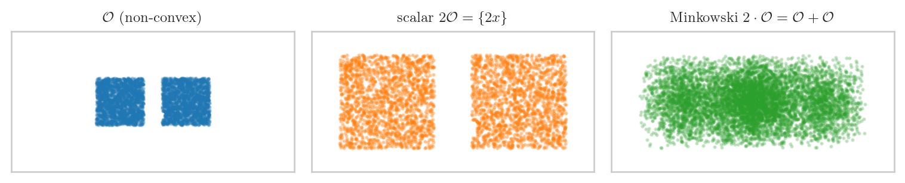

import numpy as np
import matplotlib.pyplot as plt
plt.style.use("seaborn-v0_8-whitegrid")
plt.rcParams.update({
"text.usetex": True,
"text.latex.preamble": r"\usepackage{amsmath,amssymb}",
"font.family": "serif",
"font.size": 10,
"axes.titlesize": 10,
"axes.labelsize": 10,
})
rng = np.random.default_rng(20260601)책공부 ▷ HST ▷ Lemma 6 — L겹 합성곱 하한, 초보 해설
1. 팟캐스트 버전
(스튜디오. Lemma 6 카드 한 장.)
H. 오늘 Lemma 6 이에요. 핵심 한 줄: 한 라운드에 어떤 영역 \(\mathcal{O}\) 에서 밀도가 바닥값 이상이면, \(L\) 라운드를 합쳤을 때 \(L\) 배 큰 영역 \(L\cdot\mathcal{O}\) 내부 어디서든 밀도가 양수다.
G. 등장인물부터요.
H. 셋이에요.
- \(f\) : 확률밀도. 어떤 유계 열린집합 \(\mathcal{O}\) 위에서 바닥값 \(c_f > 0\) 이상 (\(f \geq c_f\) on \(\mathcal{O}\)). Lemma 4 의 결론이랑 똑같은 모양이에요
- \(f^{*L}\) : \(f\) 를 자기자신과 \(L\) 번 합성곱(convolution) 한 것
- \(L\cdot\mathcal{O}\) : \(\mathcal{O}\) 의 Minkowski \(L\)-겹 합
G. 합성곱이 뭐였는지 다시요.
H. \(f\) 가 확률변수 \(X\) 의 밀도면, \(f^{*L}\) 은 독립 합 \(X_1 + X_2 + \cdots + X_L\) 의 밀도예요 (각 \(X_i\) 가 밀도 \(f\)). HST 맥락에선 \(X_i\) 가 “\(i\) 번째 라운드 퇴적 차이”이고 \(f^{*L}\) 은 “\(L\) 라운드 누적 차이”의 밀도.
Minkowski 합 은
\[L\cdot\mathcal{O} \;:=\; \{x_1 + x_2 + \cdots + x_L \;:\; x_i \in \mathcal{O}\}\]
\(\mathcal{O}\) 에서 점 \(L\) 개 골라 더해서 나올 수 있는 모든 값이에요. \(\mathcal{O} = (-c, c)\) 면 \(L\cdot\mathcal{O} = (-Lc, Lc)\) — \(L\) 배로 커진 영역.
H. 1차원에서 균등밀도 \(f = \mathrm{Unif}(-1,1)\) 로 \(f^{*L}\) 이 어떻게 퍼지고 양수가 되는지 직접 볼게요.
# f = Uniform(-1, 1) 의 L겹 합성곱을 수치적으로
dx = 0.01
x = np.arange(-6, 6 + dx, dx)
# 단일 밀도 f: O = (-1,1) 에서 1/2, 밖에서 0
f = np.where(np.abs(x) < 1.0, 0.5, 0.0)
c_f = 0.5 # f >= c_f on O=(-1,1)
def convolve_density(f, dx, L):
g = f.copy()
for _ in range(L - 1):
g = np.convolve(g, f, mode="same") * dx
return g
fig, ax = plt.subplots(figsize=(7, 3.4))
for L, color in [(1, "C0"), (2, "C1"), (3, "C2"), (4, "C3")]:
fL = convolve_density(f, dx, L)
ax.plot(x, fL, lw=2, color=color, label=rf"$f^{{*{L}}}$ on $L\cdot\mathcal{{O}}=(-{L},{L})$")
ax.axhline(0, color="k", lw=0.8, ls=":")
ax.set_xlim(-5, 5)
ax.set_xlabel(r"$z$"); ax.set_ylabel(r"$f^{*L}(z)$")
ax.set_title(r"$f=\mathrm{Unif}(-1,1)$: $f^{*L}$ positive on $\mathrm{int}(L\cdot\mathcal{O})$")
ax.legend(fontsize=8)
plt.tight_layout(); plt.show()
G. \(L\) 이 커질수록 support 가 \((-L, L)\) 로 넓어지고, 그 내부에서 밀도가 양수네요.
H. 정확히. support 가 정확히 \(L\cdot\mathcal{O} = (-L, L)\) 이고, 그 내부 \(\mathrm{int}(L\cdot\mathcal{O})\) 어디서든 양수예요. 끝점에서만 0 으로 떨어져요. 이게 결론 (b) 예요.
H. 세 결론을 정리하면:
(a) \(f^{*L}\) 은 연속. 유계이고 compact support 인 밀도들의 합성곱은 연속이에요. \(f * f\) 가 연속이고, 결합법칙으로 \(f^{*L}\) 도 물려받아요.
(b) \(z \in \mathrm{int}(L\cdot\mathcal{O})\) 면 \(f^{*L}(z) > 0\). \(z\) 가 내부점이면 \(z\) 를 “\(\mathcal{O}\) 점 \(L\) 개 합”으로 쓰는 방법이 한 묶음(열린 근방)으로 존재해서, 그 위에서 \(c_f\) 이상을 적분 → 양수.
(c) compact \(K \subset \mathrm{int}(L\cdot\mathcal{O})\) 면 \(c_K := \inf_{z\in K} f^{*L}(z) > 0\). (a) 연속 + (b) 양수 → 컴팩트셋에서 최솟값(inf)도 양수. 이 \(c_K\) 가 균일 하한.
# (c) 균일 하한: K = [-2.5, 2.5] ⊂ int(5·O) 에서 inf
L = 5
fL = convolve_density(f, dx, L)
K_mask = np.abs(x) <= 2.5
c_K = fL[K_mask].min()
fig, ax = plt.subplots(figsize=(7, 3.2))
ax.plot(x, fL, lw=2, color="C3", label=rf"$f^{{*{L}}}$")
ax.axvspan(-2.5, 2.5, alpha=0.12, color="C2", label=r"$K=[-2.5,2.5]$")
ax.axhline(c_K, color="crimson", ls="--", lw=1.5,
label=rf"$c_K=\inf_K f^{{*L}}={c_K:.4f}>0$")
ax.set_xlim(-6, 6); ax.set_xlabel(r"$z$"); ax.set_ylabel(r"$f^{*L}(z)$")
ax.set_title(r"(c) uniform lower bound $c_K$ on compact $K\subset\mathrm{int}(L\cdot\mathcal{O})$")
ax.legend(fontsize=8)
plt.tight_layout(); plt.show()
print(f"L=5, K=[-2.5,2.5]: c_K = inf_K f^*L = {c_K:.5f} (> 0)")
L=5, K=[-2.5,2.5]: c_K = inf_K f^*L = 0.04929 (> 0)G. \(K\) 안에서 밀도가 빨간 점선(\(c_K\)) 위로 항상 떠 있네요.
H. 그게 균일 하한이에요. Doeblin minorization 에서 이 \(c_K\) 가 그대로 minorization 상수가 돼요.
H. Lemma 4·5 와의 관계로 마무리할게요.
- Lemma 4: single round 밀도 하한 — \(f \geq c_f\) on \(\mathcal{O}\)
- Lemma 5: 이산 사건 확률 하한 — \((\varepsilon_{\min}/b)^K\)
- Lemma 6: Lemma 4 를 \(L\) 번 합치면 \(L\cdot\mathcal{O}\) 내부 어디서든 양수, compact set 에선 균일 하한 \(c_K\)
\(L\cdot\mathcal{O}\) 가 \(\mathcal{O}\) 보다 훨씬 넓으니까, “여러 라운드를 모으면 chain 을 넓은 목표 영역 어디로든 양의 밀도로 보낼 수 있다” → Doeblin minorization 의 핵심 재료예요.
G. 주사위 비유로 하면요?
H. 주사위 한 번은 1~6 만 나오지만(\(\mathcal{O}\)), 여러 번 합치면 범위가 넓어지고 중앙부는 어떤 값이든 양의 확률로 나와요. Lemma 6 은 그 “중앙부 \(\mathrm{int}(L\cdot\mathcal{O})\) 에서 밀도 양수, 컴팩트셋에선 균일하게 양수”를 정밀하게 말하는 거예요.
2. 논문직접삽입버전
Lemma. \(f:\mathbb{R}^d \to [0,\infty)\) 를 확률밀도라 하고, 유계 열린집합 \(\mathcal{O}\subset\mathbb{R}^d\) 위에서 \(f \geq c_f > 0\) 이라 하자. \(f^{*L}\) 을 \(f\) 의 \(L\)-겹 합성곱 (\(L\geq 2\)) 이라 하자. 그러면
\(f^{*L}\) 은 \(\mathbb{R}^d\) 위에서 연속이다;
Minkowski \(L\)-겹 합 \(L\cdot\mathcal{O} := \{x_1+\cdots+x_L : x_i\in\mathcal{O}\}\) 에 대해, 모든 \(z\in\mathrm{int}(L\cdot\mathcal{O})\) 에서 \(f^{*L}(z) > 0\);
임의의 compact \(K\subset\mathrm{int}(L\cdot\mathcal{O})\) 에 대해 \(c_K := \inf_{z\in K} f^{*L}(z) > 0\).
Proof.
(a) 연속성. \(f\) 는 유계 (\(\mathcal{O}\) 가 유계라 compact support) 확률밀도이다. 두 유계·compact-support 밀도의 합성곱은 연속이므로 \(f * f\) 가 연속이고, 합성곱의 결합법칙
\[f^{*L} \;=\; \underbrace{f * f}_{\text{연속}} * \underbrace{f * \cdots * f}_{L-2}\]
에 의해 \(f^{*L}\) (\(L\geq 2\)) 도 연속을 물려받는다.
(b) 내부에서 양수. \(z\in\mathrm{int}(L\cdot\mathcal{O})\) 를 고정한다. 합성곱을 처음 \(L-1\) 개 좌표로 적분 표현하면
\[f^{*L}(z) \;=\; \int_{\mathbb{R}^{(L-1)d}} \Big(\prod_{w=1}^{L-1} f(y_w)\Big)\, f\Big(z - \textstyle\sum_{w=1}^{L-1} y_w\Big)\, dy_1\cdots dy_{L-1}\]
피적분함수가 양수인 영역, 즉 모든 인자가 \(\mathcal{O}\) 에 들어가는 \((y_1,\ldots,y_{L-1})\) 들의 집합을
\[P_z \;:=\; \Big\{(y_1,\ldots,y_{L-1})\in\mathcal{O}^{L-1} \;:\; z - \textstyle\sum_{w=1}^{L-1} y_w \;\in\; \mathcal{O}\Big\}\]
라 하자. \(P_z\) 위에서 모든 인자 \(f(\cdot)\geq c_f\) 이므로
\[f^{*L}(z) \;\geq\; c_f^{\,L}\cdot\mathrm{Leb}(P_z)\]
이제 \(\mathrm{Leb}(P_z) > 0\) 을 보인다. \(z\in\mathrm{int}(L\cdot\mathcal{O})\) 이므로 점 \((z/L,\ldots,z/L)\in\mathcal{O}^{L-1}\) 은 \(P_z\) 의 점이고 (\(z - (L-1)(z/L) = z/L\in\mathcal{O}\)), \(\mathcal{O}\) 가 열린집합이고 \(z\) 가 내부점이라 이 점의 어떤 열린 근방 전체가 \(P_z\) 에 포함된다. 따라서 \(\mathrm{Leb}(P_z) > 0\), 즉
\[f^{*L}(z) \;\geq\; c_f^{\,L}\cdot\mathrm{Leb}(P_z) \;>\; 0\]
(c) 컴팩트셋 균일 하한. (a) 에 의해 \(f^{*L}\) 은 연속이고, (b) 에 의해 열린집합 \(\mathrm{int}(L\cdot\mathcal{O})\) 위에서 점마다 양수이다. compact \(K\subset\mathrm{int}(L\cdot\mathcal{O})\) 위에서 연속함수 \(f^{*L}\) 은 최솟값을 달성하며 (\(K\) compact), 그 최솟값은 (b) 에 의해 양수이므로
\[c_K \;=\; \inf_{z\in K} f^{*L}(z) \;=\; \min_{z\in K} f^{*L}(z) \;>\; 0\]
\(\square\)